Learning Module 5 Pricing and Valuation of Forward Contracts and for an Underlying with Varying Maturities - Part 2: Pricing and Valuation of Interest Rate Forward Contracts
Volume 7: Derivatives
Learning Module 5 Pricing and Valuation of Forward Contracts and for an Underlying with Varying Maturities
Part 2/2: Pricing and Valuation of Interest Rate Forward Contracts (PDF Pages 121–136)
Tập 7: Công cụ Phái sinh (Derivatives)
Học phần 5: Định giá và Xác định Giá trị Hợp đồng Kỳ hạn và đối với Tài sản Cơ sở có Kỳ hạn Khác nhau (Pricing and Valuation of Forward Contracts and for an Underlying with Varying Maturities)
Phần 2/2: Định giá và Xác định Giá trị của Hợp đồng Kỳ hạn Lãi suất (Pricing and Valuation of Interest Rate Forward Contracts) (Trang PDF 121–136)
forward ZAR/EUR price of 17.2506 in six months. The ZAR/EUR spot price is 16.909, the six-month South African risk-free rate is 3.5%, and the six-
month EUR risk-free rate is −0.5%. Describe the FX forward MTM impact from Rook Point’s perspective of an immediate appreciation in ZAR/EUR to 16.5 if other parameters are unchanged.
mức tỷ giá kỳ hạn ZAR/EUR là $17.2506$ sau sáu tháng. Tỷ giá giao ngay ZAR/EUR là $16.909$, lãi suất phi rủi ro sáu tháng của Nam Phi là $3.5\%$, và lãi suất phi rủi ro sáu tháng của đồng EUR là $-0.5\%$. Hãy mô tả tác động MTM của hợp đồng kỳ hạn ngoại hối xét dưới góc độ của Rook Point khi tỷ giá ZAR/EUR tăng giá tức thời (tức đồng ZAR tăng giá so với EUR) về mức $16.5$ nếu các tham số khác giữ nguyên không đổi.
Solution:
Lời giải:
An immediate appreciation in the ZAR/EUR spot price after contract inception will result in an MTM loss from Rook Point’s perspective as the forward seller of ZAR/EUR.
Sự tăng giá tức thời của đồng ZAR trong tỷ giá giao ngay ZAR/EUR ngay sau khi khởi tạo hợp đồng (tỷ giá ZAR/EUR giảm xuống $16.5$, nhưng lưu ý trong hợp đồng này Rook Point đồng ý bán ZAR và mua EUR, tức nắm vị thế mua đồng tiền cơ sở EUR / bán đồng tiền định giá ZAR; tuy nhiên lời giải gốc của CFA Institute xét dưới góc độ người bán kỳ hạn cặp tỷ giá ZAR/EUR như công thức dưới đây):
The FX forward MTM from Rook Point’s perspective equals the present value of the forward price discounted at the interest rate differential between the foreign currency and the domestic currency minus the spot price:
Giá trị MTM của hợp đồng kỳ hạn ngoại hối xét dưới góc độ người bán kỳ hạn bằng giá trị hiện tại của mức giá kỳ hạn được chiết khấu theo mức chênh lệch lãi suất giữa đồng ngoại tệ và đồng nội tệ trừ đi mức giá giao ngay:
V 0( T ) = F 0, f / d ( T ) e-(r f–r d)T − S 0, f / d
Note that ZAR is the price, or foreign, currency and EUR is the base, or domestic, currency, so we can rewrite the equation as:
Lưu ý rằng ZAR là đồng tiền định giá, hay ngoại tệ, và EUR là đồng tiền cơ sở, hay nội tệ, vì vậy chúng ta có thể viết lại phương trình thành:
V 0( T ) = F 0, ZAR/EUR ( T ) e-(r ZAR–r EUR)T − S 0, ZAR/EUR
If the ZAR price ( S 0, ZAR/EUR ) appreciates from 16.909 to 16.5, we can show that Rook Point would have a 0.4090 loss, as follows:
Vt ( T ) = 17.2506e-(0.035 – -0.005)×(0.5) − 16.5
Nếu mức giá ZAR ($S_{0,\text{ZAR/EUR}}$) tăng giá từ $16.909$ về $16.5$ (cần ít ZAR hơn để đổi 1 EUR, nên nếu Rook Point là bên bán ZAR để mua EUR ở tỷ giá cố định $17.2506$ thì việc ZAR tăng giá làm Rook Point chịu thiệt hại tương đương mức chênh lệch $0.4090\text{ ZAR/EUR}$), chúng ta có thể biểu diễn mức chênh lệch $0.4090$ như sau:
= 16.909 − 16.5
= 0.4090
PRICING AND VALUATION OF INTEREST RATE FORWARD CONTRACTS
ĐỊNH GIÁ VÀ XÁC ĐỊNH GIÁ TRỊ CỦA HỢP ĐỒNG KỲ HẠN LÃI SUẤT (PRICING AND VALUATION OF INTEREST RATE FORWARD CONTRACTS)
explain how forward rates are determined for interest rate forward contracts and describe the uses of these forward rates.
3
Interest Rate Forward Contracts
Giải thích cách thức lãi suất kỳ hạn được xác định đối với các hợp đồng kỳ hạn lãi suất và mô tả các ứng dụng của những lãi suất kỳ hạn này.
The relationship between spot and forward prices of underlying assets uses a constant risk-free interest rate as the opportunity cost of owning the underlying asset. Unlike equities and commodities, addressed earlier, interest rates are characterized by a term structure—that is, different interest rates exist for different times-to-maturity. While this lesson focuses on interest rates, similar principles apply to other underlying variables with a term structure, including credit spreads and implied volatility as well as foreign exchange, where two interest rate term structures are involved.
Hợp đồng Kỳ hạn Lãi suất (Interest Rate Forward Contracts)
Mối quan hệ giữa giá giao ngay và giá kỳ hạn của các tài sản cơ sở sử dụng một mức lãi suất phi rủi ro không đổi làm chi phí cơ hội của việc sở hữu tài sản cơ sở đó. Không giống như cổ phiếu và hàng hóa đã được đề cập trước đó, lãi suất được đặc trưng bởi một cấu trúc kỳ hạn (term structure) — nghĩa là tồn tại các mức lãi suất khác nhau cho các khoảng thời gian đến khi đáo hạn khác nhau. Mặc dù bài học này tập trung vào lãi suất, nhưng những nguyên tắc tương tự cũng được áp dụng cho các biến số cơ sở khác có cấu trúc kỳ hạn, bao gồm chênh lệch tín dụng (credit spreads) và độ biến động ngầm định (implied volatility) cũng như ngoại hối, nơi có sự tham gia của hai cấu trúc kỳ hạn lãi suất.
Spot Rates and Discount Factors
Lãi suất Giao ngay và Hệ số Chiết khấu (Spot Rates and Discount Factors)
The relationships between spot and forward interest rates, established in earlier fixed-income lessons, are key building blocks for interest rate derivatives pricing. These building blocks are usually based on a government benchmark or market reference rate. While most fixed-income instruments have coupon cash flows prior to maturity,
Mối quan hệ giữa lãi suất giao ngay (spot interest rates) và lãi suất kỳ hạn (forward interest rates), vốn đã được thiết lập trong các bài học về thu nhập cố định trước đây, là những cấu phần nền tảng then chốt cho việc định giá công cụ phái sinh lãi suất. Những cấu phần nền tảng này thường dựa trên một mức lãi suất chuẩn của chính phủ (government benchmark rate) hoặc lãi suất tham chiếu thị trường (market reference rate – MRR). Mặc dù hầu hết các công cụ thu nhập cố định đều có các dòng tiền lãi coupon trước khi đáo hạn,
interest rate derivatives pricing and valuation are based on the price and yield of single cash flows on a future date. The transformation of these cash flows from one form into another is a first step in the process, as in the following example.
nhưng việc định giá và xác định giá trị công cụ phái sinh lãi suất lại dựa trên mức giá và lợi suất của các dòng tiền đơn lẻ vào một ngày trong tương lai. Quá trình chuyển đổi những dòng tiền này từ dạng này sang dạng khác là bước đầu tiên trong quy trình, như được minh họa trong ví dụ sau đây.
EXAMPLE 6
VÍ DỤ 6 (EXAMPLE 6)
Zero Rate
Lãi suất Không trả lãi định kỳ / Lãi suất Giao ngay (Zero Rate)
Assume we observe three most recently issued annual fixed-coupon government bonds, with coupons and prices as follows:
Giả sử chúng ta quan sát thấy ba trái phiếu chính phủ trả lãi cố định hàng năm vừa mới được phát hành gần đây nhất, với mức lãi suất coupon và giá như sau:
| Years to Maturity | Annual Coupon | PV (per 100 FV) |
|---|---|---|
| 1 | 1.50% | 99.125 |
| 2 | 2.50% | 98.275 |
| 3 | 3.25% | 98.000 |
| Số năm đến khi Đáo hạn (Years to Maturity) | Lãi suất Coupon Hàng năm (Annual Coupon) | Giá trị Hiện tại – PV (trên 100 Mệnh giá – FV) |
|---|---|---|
| 1 | $1.50\%$ | $99.125$ |
| 2 | $2.50\%$ | $98.275$ |
| 3 | $3.25\%$ | $98.000$ |
Note that each bond trades at a discount (PV < FV). As a first step, we solve for each bond’s yield-to-maturity (YTM) using the Excel RATE function (=RATE(nper, pmt, pv, [fv],[type])). For example, for the three-year bond, we use nper = 3, pmt = 3.25, pv = −98, fv = 100, and type = 0 (indicating payment at the end of the period) to solve for the three-year bond YTM of 3.9703%.
Lưu ý rằng mỗi trái phiếu đều được giao dịch ở mức chiết khấu ($\text{PV} < \text{FV}$). Ở bước đầu tiên, chúng ta giải tìm lợi suất đáo hạn ($\text{YTM}$) của từng trái phiếu bằng cách sử dụng hàm RATE trong Excel (=RATE(nper, pmt, pv, [fv], [type])). Ví dụ, đối với trái phiếu kỳ hạn ba năm, chúng ta sử dụng nper = 3, pmt = 3.25, pv = -98, fv = 100, và type = 0 (biểu thị thanh toán vào cuối kỳ) để giải tìm $\text{YTM}$ của trái phiếu ba năm là $3.9703\%$.
| Years to | |||
|---|---|---|---|
| Maturity | Annual Coupon | PV (per 100 FV) | YTM |
| 1 | 1.50% | 99.125 | 2.3960% |
| 2 | 2.50% | 98.275 | 3.4068% |
| 3 | 3.25% | 98.000 | 3.9703% |
| Số năm đến khi Đáo hạn (Years to Maturity) | Lãi suất Coupon Hàng năm (Annual Coupon) | PV (trên 100 FV) | Lợi suất Đáo hạn (YTM) |
|---|---|---|---|
| 1 | $1.50\%$ | $99.125$ | $2.3960\%$ |
| 2 | $2.50\%$ | $98.275$ | $3.4068\%$ |
| 3 | $3.25\%$ | $98.000$ | $3.9703\%$ |
We can use these government yields-to-maturity to solve for a sequence of yields-to-maturity on zero-coupon bonds, or zero rates ( z 1, … z N), where z i is the zero rate for period i .
Chúng ta có thể sử dụng các lợi suất đáo hạn của trái phiếu chính phủ này để giải tìm một chuỗi các lợi suất đáo hạn trên những trái phiếu không trả lãi định kỳ (zero-coupon bonds), hay còn gọi là lãi suất zero (zero rates: $z_1, \dots, z_N$), trong đó $z_i$ là lãi suất zero cho kỳ thứ $i$.
Starting with the one-year bond, which consists of a single cash flow at maturity, we can solve for the one-year zero rate ( z 1) as follows:
Bắt đầu với trái phiếu kỳ hạn một năm, vốn chỉ bao gồm một dòng tiền duy nhất khi đáo hạn, chúng ta có thể giải tìm lãi suất zero một năm ($z_1$) như sau:
One-year:
Kỳ hạn một năm:
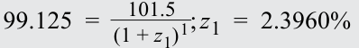
The yield-to-maturity rate and the zero rate for a bond with a single cash flow at maturity in one period are identical. Since all cash flows at time t = 1 are discounted at z 1, we can substitute z1 into the two-year fixed-coupon bond calculation to solve for the zero-coupon rate at the end of the second period ( z 2): Two-year:
Lợi suất đáo hạn và lãi suất zero đối với một trái phiếu có một dòng tiền duy nhất khi đáo hạn sau một kỳ là hoàn toàn giống nhau. Vì tất cả các dòng tiền tại thời điểm $t = 1$ đều được chiết khấu theo lãi suất $z_1$, nên chúng ta có thể thế $z_1$ vào phép tính trái phiếu trả lãi cố định kỳ hạn hai năm để giải tìm lãi suất không trả lãi định kỳ vào cuối kỳ thứ hai ($z_2$):
Kỳ hạn hai năm:
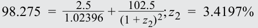
We then substitute both z 1 and z 2 into the three-year bond equation to solve for the zero-coupon cash flow at the end of year three ( z 3): Three-year:
Sau đó, chúng ta thế cả $z_1$ và $z_2$ vào phương trình trái phiếu kỳ hạn ba năm để giải tìm lãi suất chiết khấu dòng tiền không trả lãi định kỳ vào cuối năm thứ ba ($z_3$):
Kỳ hạn ba năm:
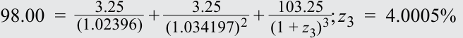
The zero rates are summarized in the following diagram:
Các mức lãi suất zero được tóm tắt trong sơ đồ dưới đây:
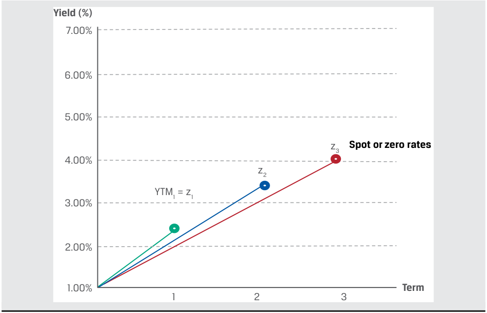
Chú thích hình ảnh: Đồ thị Lợi suất (Yield (%)} theo Kỳ hạn (Term 1, 2, 3 năm) biểu diễn các mức lãi suất giao ngay hay lãi suất zero (Spot or zero rates): $\text{YTM}_1 = z_1$ tại năm 1, $z_2$ tại năm 2, và $z_3$ tại năm 3.
This process of deriving zero or spot rates from coupon bonds using forward substitution, as shown in Example 6, is sometimes referred to as bootstrapping. The price equivalent of a zero rate is the present value of a currency unit on a future date, known as a discount factor . The discount factor for period i (DF i ) is:
Quy trình suy ra các mức lãi suất zero hay lãi suất giao ngay từ những trái phiếu trả lãi định kỳ bằng phương pháp thế tiến (forward substitution), như được thể hiện trong Ví dụ 6, đôi khi được gọi là phương pháp nội suy cuốn chiếu (bootstrapping). Đại lượng tương đương về mặt giá (price equivalent) của một mức lãi suất zero là giá trị hiện tại của một đơn vị tiền tệ vào một ngày trong tương lai, được gọi là hệ số chiết khấu (discount factor). Hệ số chiết khấu cho kỳ thứ $i$ ($\text{DF}_i$) là:
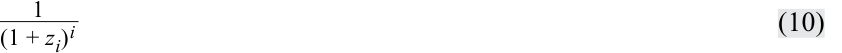
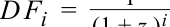
For each of the zero rates shown in Example 6, an equivalent discount factor can be derived as follows:
Đối với mỗi mức lãi suất zero được trình bày trong Ví dụ 6, một hệ số chiết khấu tương đương có thể được suy ra như sau:
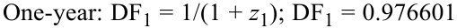
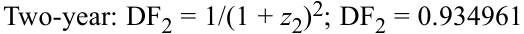
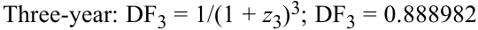
A discount factor may also be interpreted as the price of a zero-coupon cash flow or bond. We can use the discount factor for any period to demonstrate the same no-arbitrage condition from an earlier lesson—namely, that an asset with a known future price must trade at the present value of its future price as determined by using an appropriate discount rate.
Một hệ số chiết khấu cũng có thể được hiểu là mức giá của một dòng tiền hoặc một trái phiếu không trả lãi định kỳ (có mệnh giá bằng 1 đơn vị tiền tệ). Chúng ta có thể sử dụng hệ số chiết khấu cho bất kỳ kỳ nào để chứng minh cùng một điều kiện không có kinh doanh chênh lệch giá từ bài học trước — cụ thể là một tài sản có mức giá tương lai đã biết bắt buộc phải được giao dịch ở mức giá trị hiện tại của giá tương lai đó khi được xác định bằng cách sử dụng một lãi suất chiết khấu phù hợp.
For example, assume a two-year GBP risk-free zero rate ( z 2) of 3.42% and a two-year zero-coupon bond with a face value of GBP100 trading at a price of GBP92.45. The no-arbitrage price of the zero-coupon bond is equal to GBP93.4955: GBP100/(1.0342)2 . In order to earn a riskless arbitrage profit, we can take the following steps, as shown in Exhibit 6.
Ví dụ, giả sử lãi suất zero phi rủi ro kỳ hạn hai năm của đồng GBP ($z_2$) là $3.42\%$ và một trái phiếu không trả lãi định kỳ kỳ hạn hai năm có mệnh giá $\text{GBP}100$ đang được giao dịch ở mức giá $\text{GBP}92.45$. Mức giá không có kinh doanh chênh lệch giá của trái phiếu không trả lãi định kỳ này bằng $\text{GBP}93.4955$: $\text{GBP}100 / (1.0342)^2$. Để kiếm một khoản lợi nhuận kinh doanh chênh lệch giá phi rủi ro, chúng ta có thể thực hiện các bước sau đây, như được thể hiện trong Bảng minh họa 6.
Exhibit 6: Asset with Known Future Price Does Not Trade at Its Present Value
Bảng minh họa 6: Tài sản có Giá Tương lai Đã biết Không Giao dịch tại Giá trị Hiện tại của Nó (Asset with Known Future Price Does Not Trade at Its Present Value)
S0 < ST(1 + zT)–T S0(1 + zT)T < ST
| Tại thời điểm $0$: $S_0 < S_T(1 + z_T)^{-T}$ | Tại thời điểm $T$: $S_0(1 + z_T)^T < S_T$ |
|---|---|
| Vay $S_0$ ở mức lãi suất $z_T$ và Mua $S_0$, Nắm giữ đến ngày đáo hạn ($T$). Cụ thể: Vay $£92.45$ ở mức lãi suất $3.42\%$ và Mua trái phiếu zero kỳ hạn hai năm ($S_0$). Dòng tiền: $CF_0 = 0$. |
Sử dụng số tiền thu được khi đáo hạn để hoàn trả $S_0(1 + z_T)^T$. Cụ thể: Nhận $£100$ tại thời điểm $T$ ($S_T$) và Hoàn trả $S_0(1 + z_T)^T = £98.88$. Lợi nhuận phi rủi ro là $£1.12$. Dòng tiền: $CF_T = (£100 - £98.88) > 0$. |
Borrow S0 at z and Buy S0, Hold to maturity (T) Use proceeds at maturity to repay S0(1 + zT)T Borrow £92.45 at 3.42% and Buy two-year zero (S0) Receive £100 at T(ST) and Repay S0(1 + zT)T = £98.88
Riskless profit of £1.12 CF0 = 0 CFT = (£100 – £98.88) > 0 0 Time T
- Tại thời điểm $t = 0$:
- Vay $\text{GBP}92.45$ ở mức lãi suất phi rủi ro là $3.42\%$.
- Mua trái phiếu không trả lãi định kỳ kỳ hạn hai năm với giá $\text{GBP}92.45$.
- Tại thời điểm $t = T$ (sau hai năm):
- Nhận $\text{GBP}100$ vào ngày đáo hạn của trái phiếu không trả lãi định kỳ.
- Hoàn trả khoản vay $\text{GBP}98.88$ — tức $\text{GBP}92.45 \times (1.0342)^2$ — và kiếm được khoản lợi nhuận kinh doanh chênh lệch giá phi rủi ro là $\text{GBP}1.12$.
At time t = 0:
Lãi suất Kỳ hạn (Forward Rates)
-
Borrow GBP92.45 at the risk-free rate of 3.42%.
-
Purchase the two-year zero-coupon note for GBP92.45.
-
At time t = T (in two years):
-
Receive GBP100 on the zero-coupon bond maturity date.
-
Repay loan of GBP98.88—GBP92.45 × (1.0342)2 —and earn a riskless arbitrage profit of GBP1.12.
Giống như trường hợp của các tài sản cơ sở khác, thị trường kỳ hạn đối với lãi suất liên quan đến một ngày chuyển giao nằm xa hơn ngày thanh toán thông thường trên thị trường tiền mặt. Với cấu trúc kỳ hạn gồm các mức lãi suất khác nhau cho các kỳ hạn khác nhau, một hợp đồng kỳ hạn lãi suất quy định cả độ dài của khoảng thời gian kỳ hạn (length of the forward period) lẫn kỳ hạn của lãi suất cơ sở (tenor of the underlying rate).
Forward Rates
Ví dụ, một hợp đồng kỳ hạn hai năm tham chiếu đến một mức lãi suất cơ sở kỳ hạn ba năm (bắt đầu vào cuối năm thứ hai và đáo hạn vào cuối năm thứ năm) được gọi là lãi suất kỳ hạn “2y3y”, mà chúng ta sẽ ký hiệu là $F_{2,3}$. Các lãi suất tham chiếu thị trường (market reference rates – MRRs) ngắn hạn thường tham chiếu đến một lãi suất kỳ hạn tính theo tháng — chẳng hạn, $F_{3\text{m},6\text{m}}$ tham chiếu đến một lãi suất MRR kỳ hạn sáu tháng bắt đầu sau ba tháng nữa và đáo hạn sau chín tháng tính từ ngày hôm nay.
As in the case of other underlying assets, the forward market for interest rates involves a delivery date beyond the usual cash market settlement date. Given the term structures of different interest rates for different maturities, an interest rate forward contract specifies both the length of the forward period and the tenor of the underlying rate.
For example, a two-year forward contract that references a three-year underlying interest rate (which starts at the end of year two and matures at the end of year five) is referred to as a “2y3y” forward rate, which we will denote as F 2,3. Short-term market reference rates (MRRs) usually reference a forward rate in months—for instance, F 3m,6m references a six-month MRR that begins in three months and matures nine months from today.
Mức lãi suất tái đầu tư hòa vốn (breakeven reinvestment rate) liên kết một trái phiếu không trả lãi định kỳ ngắn hạn và một trái phiếu không trả lãi định kỳ dài hạn chính là lãi suất kỳ hạn ngầm định (implied forward rate – IFR). Nghĩa là, lãi suất kỳ hạn ngầm định là mức lãi suất cho một giai đoạn trong tương lai mà tại đó nhà đầu tư kiếm được cùng một mức sinh lợi từ:
The breakeven reinvestment rate linking a short-dated and a long-dated zero-coupon bond is an implied forward rate . That is, the implied forward rate is the interest rate for a period in the future at which an investor earns the same return from:
1. việc đầu tư trong một khoảng thời gian kể từ ngày hôm nay cho đến ngày bắt đầu kỳ hạn (forward start date) và tái đầu tư (rolling over) số tiền thu được ở mức lãi suất kỳ hạn ngầm định, hoặc
1. investing for a period from today until the forward start date and rolling over the proceeds at the implied forward rate, or
2. việc đầu tư ngay từ ngày hôm nay cho đến tận ngày đáo hạn cuối cùng của lãi suất kỳ hạn đó.
2. investing today through the final maturity of the forward rate.
Việc hai chiến lược này có mức sinh lợi bằng nhau thiết lập nên điều kiện không có kinh doanh chênh lệch giá cho lãi suất kỳ hạn ngầm định. Ví dụ sau đây minh họa cách thức các lãi suất giao ngay có thể được sử dụng để suy ra lãi suất kỳ hạn.
The fact that these strategies have equal returns establishes the no-arbitrage condition for the implied forward rate. The following example demonstrates how spot rates can be used to derive forward rates.
EXAMPLE 7
VÍ DỤ 7 (EXAMPLE 7)
Implied Forward Rate ( IFR 1,1)
Lãi suất Kỳ hạn Ngầm định ($\text{IFR}_{1,1}$) (Implied Forward Rate)
We return to the earlier example of three most recently issued annual fixed-coupon government bonds, with coupons and prices as well as yields-to-maturity and zero or spot rates as follows:
Chúng ta quay trở lại ví dụ trước đó về ba trái phiếu chính phủ trả lãi cố định hàng năm vừa mới được phát hành gần đây nhất, với mức lãi suất coupon và giá cũng như lợi suất đáo hạn và lãi suất zero hay lãi suất giao ngay như sau:
| Years to Maturity | Annual Coupon | PV (per 100 | FV) | YTM |
|---|---|---|---|---|
| 1 | 1.50% | 99.125 | 2.3960% | |
| 2 | 2.50% | 98.275 | 3.4068% | |
| 3 | 3.25% | 98.000 | 3.9703% | |
| Years to Maturity | Zero Rate | |||
| 1 | 2.3960% | |||
| 2 | 3.4197% | |||
| 3 | 4.0005% |
| Số năm đến khi Đáo hạn (Years to Maturity) | Lãi suất Coupon Hàng năm (Annual Coupon) | PV (trên 100 FV) | Lợi suất Đáo hạn (YTM) |
|---|---|---|---|
| 1 | $1.50\%$ | $99.125$ | $2.3960\%$ |
| 2 | $2.50\%$ | $98.275$ | $3.4068\%$ |
| 3 | $3.25\%$ | $98.000$ | $3.9703\%$ |
Using the one-year and two-year zero rates from the prior example, an investor faces the following investment choices over a two-year period:
| Số năm đến khi Đáo hạn (Years to Maturity) | Lãi suất Zero (Zero Rate) |
|---|---|
| 1 | $2.3960\%$ |
| 2 | $3.4197\%$ |
| 3 | $4.0005\%$ |
1. Invest USD100 for one year today at the zero rate ( z 1) of 2.396% and reinvest the proceeds of USD102.40 at the one-year rate in one year’s time, or the “1y1y” implied forward rate ( IFR 1,1).
Bằng cách sử dụng lãi suất zero một năm và hai năm từ ví dụ trước, một nhà đầu tư đứng trước các lựa chọn đầu tư sau đây trong khoảng thời gian hai năm:
1. Đầu tư $\text{USD}100$ trong một năm kể từ ngày hôm nay ở mức lãi suất zero ($z_1$) là $2.396\%$ và tái đầu tư số tiền thu được là $\text{USD}102.40$ ở mức lãi suất một năm sau thời gian một năm nữa, hay còn gọi là lãi suất kỳ hạn ngầm định “1y1y” ($\text{IFR}_{1,1}$).
2. Invest USD100 for two years at the two-year zero rate ( z 2) of 3.4197% to receive USD100(1 + z 2)2 , or USD106.96.
2. Đầu tư $\text{USD}100$ trong hai năm ở mức lãi suất zero hai năm ($z_2$) là $3.4197\%$ để nhận về $\text{USD}100(1 + z_2)^2$, tương đương $\text{USD}106.96$.
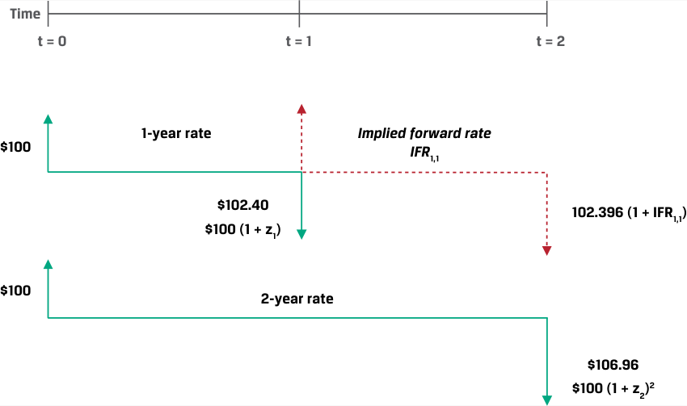
Chú thích hình ảnh: - Chiến lược 1 (trên): Đầu tư $\$100$ tại $t = 0$ theo lãi suất 1 năm $z_1 \rightarrow$ nhận $\$100(1+z_1) = \$102.40$ tại $t = 1 \rightarrow$ tái đầu tư theo lãi suất kỳ hạn ngầm định $\text{IFR}{1,1}$ đến $t = 2 \rightarrow$ nhận $102.396(1 + \text{IFR}{1,1})$. - Chiến lược 2 (dưới): Đầu tư $\$100$ tại $t = 0$ theo lãi suất 2 năm $z_2 \rightarrow$ nhận $\$100(1+z_2)^2 = \$106.96$ tại $t = 2$.
In order to arrive at the same return for investment choices 1.) and 2.), we set them equal to each other and solve for IFR 1,1 as follows:
Để đạt được cùng một mức sinh lợi cho hai lựa chọn đầu tư 1) và 2), chúng ta cho chúng bằng nhau và giải tìm $\text{IFR}_{1,1}$ như sau:
- USD100 × (1 + z 1) × (1 + IFR 1,1) = USD100 × (1 + z 2)2
USD100 × (1.02396) × (1 + IFR 1,1) = USD100 × (1.034197)2
IFR 1,1 = 4.4536%
We can demonstrate that the IFR1,1 of 4.4536% creates identical returns for the first and second strategies by calculating the return on the first strategy as follows:
Chúng ta có thể chứng minh rằng mức $\text{IFR}_{1,1}$ bằng $4.4536\%$ tạo ra mức sinh lợi giống hệt nhau cho chiến lược thứ nhất và chiến lược thứ hai bằng cách tính mức sinh lợi của chiến lược thứ nhất như sau:
USD100 × (1.02396) × (1.044536) = USD106.96
In general, assume a shorter-term bond matures in A periods and a longer-term bond matures in B periods. The yields-to-maturity per period on these bonds are denoted as zA and zB . The first bond is an A -period zero-coupon bond trading in the cash market. The second is a B -period zero-coupon cash market bond. The implied forward rate between period A and period B is denoted as IFRA , B – A . It is a forward rate on a bond that starts in period A and ends in period B . Its tenor is B − A periods.
Một cách tổng quát, giả sử một trái phiếu ngắn hạn hơn đáo hạn sau $A$ kỳ và một trái phiếu dài hạn hơn đáo hạn sau $B$ kỳ. Lợi suất đáo hạn trên mỗi kỳ của những trái phiếu này được ký hiệu là $z_A$ và $z_B$. Trái phiếu thứ nhất là một trái phiếu không trả lãi định kỳ kỳ hạn $A$ kỳ được giao dịch trên thị trường tiền mặt. Trái phiếu thứ hai là một trái phiếu không trả lãi định kỳ kỳ hạn $B$ kỳ trên thị trường tiền mặt. Lãi suất kỳ hạn ngầm định giữa kỳ $A$ và kỳ $B$ được ký hiệu là $\text{IFR}_{A,B-A}$. Đó là một mức lãi suất kỳ hạn trên một trái phiếu bắt đầu tại kỳ $A$ và kết thúc tại kỳ $B$. Kỳ hạn (tenor) của nó là $B - A$ kỳ.
Equation 11 is a general formula for the relationship between the two spot rates ( z A, z B) and the implied forward rate ( IFRA,B–A ):
Phương trình 11 là công thức tổng quát cho mối quan hệ giữa hai lãi suất giao ngay ($z_A, z_B$) và lãi suất kỳ hạn ngầm định ($\text{IFR}_{A,B-A}$):
(1 + zA )A × (1 + IFRA , B – A )B–A = (1 + zB )B
~~(11)~~
Exhibit 7 shows the possible implied forward rates over three periods.
Bảng minh họa 7 thể hiện các mức lãi suất kỳ hạn ngầm định có thể có trong phạm vi ba kỳ.
Exhibit 7: Implied Forward Rate Example
Bảng minh họa 7: Ví dụ về Lãi suất Kỳ hạn Ngầm định (Implied Forward Rate Example)
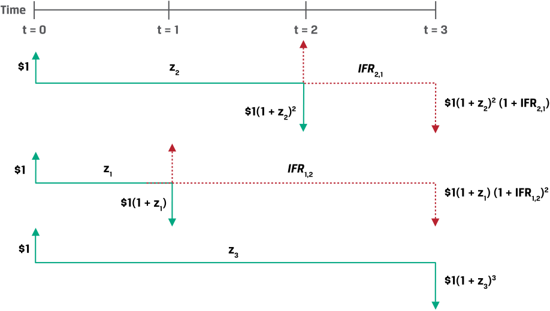
Chú thích hình ảnh: - Nhánh 1: Đầu tư $\$1$ trong 2 năm theo lãi suất $z_2$ nhận $\$1(1+z_2)^2$ tại $t = 2$, sau đó tái đầu tư 1 năm theo $\text{IFR}{2,1}$ đến $t = 3$ nhận $\$1(1+z_2)^2(1+\text{IFR}{2,1})$. - Nhánh 2: Đầu tư $\$1$ trong 1 năm theo lãi suất $z_1$ nhận $\$1(1+z_1)$ tại $t = 1$, sau đó tái đầu tư 2 năm theo $\text{IFR}{1,2}$ đến $t = 3$ nhận $\$1(1+z_1)(1+\text{IFR}{1,2})^2$. - Nhánh 3: Đầu tư $\$1$ trong 3 năm theo lãi suất $z_3$ nhận $\$1(1+z_3)^3$ tại $t = 3$.
Using Equation 11, we can solve for the one-period rate in two periods (IFR2,1) as follows:
Bằng cách sử dụng Phương trình 11, chúng ta có thể giải tìm mức lãi suất một kỳ bắt đầu sau hai kỳ nữa ($\text{IFR}_{2,1}$) như sau:
(1 + z2 )2 × (1 + IFR2 , 1 )1 = (1 + z3 )3
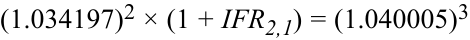
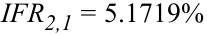
A series of forward rates can be used to construct a forward curve of rates with the same time frame that are implied by cash market transactions or may be observed in the interest rate derivatives market. Exhibit 8 summarizes the relationship between spot or zero rates and the forward curve for one-year rates from the earlier government bond example.
Một chuỗi các lãi suất kỳ hạn có thể được sử dụng để xây dựng một đường cong kỳ hạn (forward curve) gồm các mức lãi suất có cùng khung thời gian được ngầm định bởi các giao dịch trên thị trường tiền mặt hoặc có thể được quan sát thấy trên thị trường công cụ phái sinh lãi suất. Bảng minh họa 8 tóm tắt mối quan hệ giữa lãi suất giao ngay hay lãi suất zero và đường cong kỳ hạn đối với các mức lãi suất kỳ hạn một năm từ ví dụ trái phiếu chính phủ trước đó.
Exhibit 8: Interest Rate Spot or Zero Curve and Forward Curve
Bảng minh họa 8: Đường cong Lãi suất Giao ngay (hoặc Lãi suất Zero) và Đường cong Kỳ hạn (Interest Rate Spot or Zero Curve and Forward Curve)
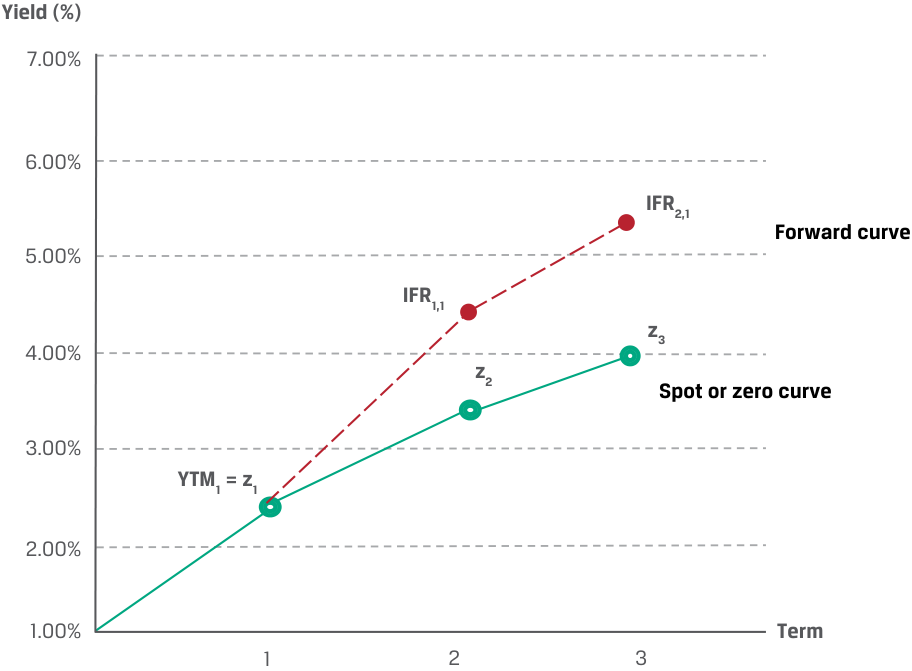
Chú thích hình ảnh: - Đường cong giao ngay hay đường cong zero (Spot or zero curve): nối các điểm $\text{YTM}_1 = z_1$ (năm 1), $z_2$ (năm 2), $z_3$ (năm 3). - Đường cong kỳ hạn (Forward curve): nằm phía trên đường cong giao ngay (khi đường cong giao ngay dốc lên), nối từ $\text{YTM}_1 = z_1$ (năm 1) lên $\text{IFR}_{1,1}$ (năm 2) và $\text{IFR}_{2,1}$ (năm 3).
While our examples so far have focused on government benchmark rates, we now turn our attention to short-term market reference rates. Assume, for example, that today we observe a current three-month MRR of 1.25% and a current six-month MRR of 1.75%. How can we solve for the three-month implied forward MRR in three months’ time ( IFR 3m, 3m)?
Mặc dù các ví dụ của chúng ta cho đến nay đều tập trung vào các mức lãi suất chuẩn của chính phủ, nhưng giờ đây chúng ta chuyển sự chú ý sang các lãi suất tham chiếu thị trường (market reference rates – MRRs) ngắn hạn. Ví dụ, giả sử rằng ngày hôm nay chúng ta quan sát thấy lãi suất MRR kỳ hạn ba tháng hiện tại là $1.25\%$ và lãi suất MRR kỳ hạn sáu tháng hiện tại là $1.75\%$. Làm thế nào chúng ta có thể giải tìm lãi suất MRR kỳ hạn ngầm định kỳ hạn ba tháng bắt đầu sau ba tháng nữa ($\text{IFR}_{3\text{m},3\text{m}}$)?
In order to apply Equation 11 in this case, we must first ensure that the time frames, or periodicities, of the interest rates are the same. Here, the six-month rate has two periods per year and the three-month rate has four. Recall from an earlier fixed-income lesson that we can convert an annual percentage rate for m periods per year, denoted as APRm , into an annual percentage rate for n periods per year, APRn , as follows:
Để áp dụng Phương trình 11 trong trường hợp này, trước hết chúng ta phải đảm bảo rằng khung thời gian, hay định kỳ ghép lãi (periodicities), của các mức lãi suất là giống nhau. Ở đây, lãi suất sáu tháng có hai kỳ mỗi năm và lãi suất ba tháng có bốn kỳ mỗi năm. Hãy nhớ lại từ bài học thu nhập cố định trước đây rằng chúng ta có thể chuyển đổi một mức lãi suất phần trăm hàng năm cho $m$ kỳ mỗi năm, ký hiệu là $\text{APR}_m$, sang mức lãi suất phần trăm hàng năm cho $n$ kỳ mỗi năm, $\text{APR}_n$, như sau:
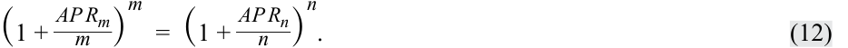
First, we must convert the 1.75% semiannual MRR into a quarterly rate:
Trước tiên, chúng ta phải chuyển đổi mức lãi suất MRR bán niên $1.75\%$ sang mức lãi suất ghép lãi theo quý:
(1 + APR4 /4)4 = (1 + 0.0175/2)2 APR4 = 1.74619%
Chúng ta có thể sử dụng kết quả này để giải Phương trình 11 tìm $\text{IFR}_{3\text{m},3\text{m}}$:
We can use this to solve Equation 11 for IFR3m,3m : (1 + z3m /4) × (1 + IFR3m,3m /4) = (1 + z 6m/4)2 (1 + 0.0125/4) × (1 + IFR 3m,3m/4) = (1 + 0.0174619/4)2 IFR3m,3m = 2.24299%
Our result can be confirmed by showing that CNY100,000,000 invested at:
Kết quả của chúng ta có thể được xác nhận bằng cách chỉ ra rằng khoản tiền $\text{CNY}100,000,000$ được đầu tư tại:
1. 1.25% for three months and reinvested at 2.24299% for the following three months, or
1. mức lãi suất $1.25\%$ trong ba tháng và tái đầu tư ở mức $2.24299\%$ cho ba tháng tiếp theo, hoặc
2. 1.75% for six months
2. mức lãi suất $1.75\%$ trong sáu tháng
will both return CNY100,875,000 in six months:
sẽ đều mang lại tổng số tiền là $\text{CNY}100,875,000$ sau sáu tháng:
1. CNY100,875,000 (= CNY100,000,000 × (1 + 0.0125/4) × (1 + 0.0224299/4))
1. $\text{CNY}100,875,000 = \text{CNY}100,000,000 \times (1 + 0.0125/4) \times (1 + 0.0224299/4)$
2. CNY100,875,000 (= CNY100,000,000 × (1 + 0.0175/2))
2. $\text{CNY}100,875,000 = \text{CNY}100,000,000 \times (1 + 0.0175/2)$
As we will see in the next section, this breakeven reinvestment rate between zero rates of different maturities establishes a no-arbitrage price for a one-period interest rate forward contract.
Như chúng ta sẽ thấy trong phần tiếp theo, mức lãi suất tái đầu tư hòa vốn này giữa các lãi suất zero có kỳ hạn khác nhau sẽ thiết lập nên một mức giá không có kinh doanh chênh lệch giá cho một hợp đồng kỳ hạn lãi suất đơn kỳ.
Forward Rate Agreements (FRAs)
Hợp đồng Kỳ hạn Lãi suất (Forward Rate Agreements – FRAs)
An OTC derivatives contract in which counterparties agree to apply a specific interest rate to a future period is a forward rate agreement (FRA) . The underlying is a hypothetical deposit of a notional amount in the future at a market reference rate that is fixed at contract inception ( t = 0). The FRA buyer, or long position, agrees to pay the deposit interest based on the agreed upon fixed rate and receives deposit interest based on a market reference rate that begins in A periods and ends in B periods (with a tenor of B − A periods) and is determined on or just before the forward settlement date at time t = A .
Một hợp đồng phái sinh OTC trong đó các đối tác đồng ý áp dụng một mức lãi suất cụ thể cho một giai đoạn trong tương lai được gọi là hợp đồng kỳ hạn lãi suất (forward rate agreement – FRA). Tài sản cơ sở là một khoản tiền gửi giả định với một giá trị gốc danh nghĩa (notional amount) trong tương lai theo một mức lãi suất tham chiếu thị trường mà được ấn định cố định ngay khi khởi tạo hợp đồng ($t = 0$). Bên mua FRA (FRA buyer), hay vị thế mua (long position), đồng ý trả khoản tiền lãi tiền gửi dựa trên mức lãi suất cố định đã thỏa thuận trước và nhận về khoản tiền lãi tiền gửi dựa trên mức lãi suất tham chiếu thị trường bắt đầu tại kỳ $A$ và kết thúc tại kỳ $B$ (với kỳ hạn là $B - A$ kỳ) và được xác định vào đúng hoặc ngay trước ngày thanh toán kỳ hạn tại thời điểm $t = A$.
Exhibit 9 shows FRA mechanics at t = 0 and settlement at time A .
Bảng minh họa 9 thể hiện cơ chế hoạt động của FRA tại thời điểm $t = 0$ và việc tất toán tại thời điểm $A$.
Exhibit 9: Forward Rate Agreement (FRA) Mechanics
Bảng minh họa 9: Cơ chế Hoạt động của Hợp đồng Kỳ hạn Lãi suất (Forward Rate Agreement (FRA) Mechanics)
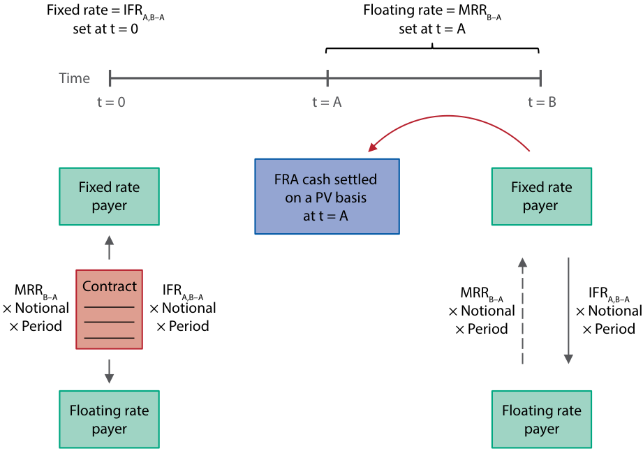
Chú thích hình ảnh: - Thời điểm $t = 0$: Ấn định lãi suất cố định $\text{Fixed rate} = \text{IFR}_{A,B-A}$. Bên trả lãi suất cố định (Fixed rate payer) ký hợp đồng với Bên trả lãi suất thả nổi (Floating rate payer) trên cơ sở $\text{MRR}_{B-A} \times \text{Notional} \times \text{Period}$ đổi lấy $\text{IFR}_{A,B-A} \times \text{Notional} \times \text{Period}$. - Thời điểm $t = A$: Ấn định lãi suất thả nổi $\text{Floating rate} = \text{MRR}_{B-A}$. Hợp đồng FRA được tất toán bằng tiền mặt trên cơ sở giá trị hiện tại ($\text{PV}$) ngay tại thời điểm $t = A$ (chiết khấu khoản thanh toán ròng từ thời điểm $t = B$ về $t = A$).
If Exhibit 9 looks familiar, it is because an FRA is a one-period version of the interest rate swap introduced as a series of exchanges in an earlier lesson. Similar to the swap, fixed versus floating payments on an FRA occur on a net basis and the notional is not exchanged but is used solely for interest calculations. The implied forward rates shown in the previous section represent the FRA fixed rate for a given period where no riskless profit opportunities exist. This no-arbitrage interest rate ensures that, similar to other forward contracts, the forward rate agreement has a value of zero ( V 0( T ) = 0) to both parties at inception. FRA settlement and other details are best demonstrated by extending our earlier implied forward rate example.
Nếu Bảng minh họa 9 trông có vẻ quen thuộc, thì đó là bởi vì FRA chính là phiên bản một kỳ (one-period version) của hợp đồng hoán đổi lãi suất (interest rate swap) đã được giới thiệu như một chuỗi các giao dịch trao đổi trong một bài học trước. Tương tự như hợp đồng hoán đổi, các khoản thanh toán cố định so với thả nổi trên một hợp đồng FRA diễn ra trên cơ sở bù trừ ròng (net basis) và giá trị gốc danh nghĩa (notional) không được trao đổi mà chỉ được sử dụng thuần túy cho việc tính toán tiền lãi. Các mức lãi suất kỳ hạn ngầm định được trình bày trong phần trước đại diện cho mức lãi suất cố định của FRA cho một kỳ nhất định nơi không tồn tại các cơ hội kiếm lợi nhuận phi rủi ro. Mức lãi suất không có kinh doanh chênh lệch giá này đảm bảo rằng, tương tự như các hợp đồng kỳ hạn khác, hợp đồng kỳ hạn lãi suất có giá trị bằng không ($V_0(T) = 0$) đối với cả hai bên khi khởi tạo. Việc tất toán FRA và các chi tiết khác được minh họa rõ nhất bằng cách mở rộng ví dụ về lãi suất kỳ hạn ngầm định trước đó của chúng ta.
EXAMPLE 8
VÍ DỤ 8 (EXAMPLE 8)
CNY Forward Rate Agreement
Hợp đồng Kỳ hạn Lãi suất Đồng Nhân dân tệ (CNY Forward Rate Agreement)
In a prior example, we solved for a three-month implied forward MRR in three months’ time ( IFR3m,3m ) of 2.24299%. Yangzi Bank enters into an agreement to pay the three-month rate in three months’ time and receive MRR as in Exhibit 9. Yangzi Bank uses the FRA to offset or hedge an underlying liability in three months on which it will owe MRR.
Trong một ví dụ trước, chúng ta đã giải tìm được mức lãi suất MRR kỳ hạn ngầm định kỳ hạn ba tháng bắt đầu sau ba tháng nữa ($\text{IFR}_{3\text{m},3\text{m}}$) là $2.24299\%$. Ngân hàng Yangzi (Yangzi Bank) tham gia vào một thỏa thuận để trả mức lãi suất ba tháng sau thời gian ba tháng nữa và nhận về lãi suất MRR như trong Bảng minh họa 9. Ngân hàng Yangzi sử dụng hợp đồng FRA này để bù trừ hoặc phòng ngừa rủi ro cho một khoản nợ phải trả cơ sở phát sinh sau ba tháng nữa mà ngân hàng sẽ phải trả lãi theo MRR.
Consider the following FRA term sheet:
Hãy xem xét bảng điều khoản (term sheet) FRA sau đây:
Yangzi Bank CNY Forward Rate Agreement Term Sheet
Bảng Điều khoản Hợp đồng Kỳ hạn Lãi suất Đồng CNY của Ngân hàng Yangzi (Yangzi Bank CNY Forward Rate Agreement Term Sheet)
| Start Date: | [Today] |
|---|---|
| Maturity Date: | [Three months from Start Date] |
| Notional Principal: | CNY 100,000,000 |
| Fixed-Rate Payer: | Yangzi Bank |
| Fixed Rate: | 2.24299% on a quarterly actual/360 basis |
| Floating-Rate Payer: | [Financial Intermediary] |
| Floating Rate: | Three-month CNY MRR on a quarterly actual/360 basis |
| Payment Date: | Maturity Date |
| Business Days: | Shanghai |
| Documentation: | ISDA Agreement and credit terms acceptable to both parties |
| Ngày Bắt đầu (Start Date): | [Hôm nay] |
|---|---|
| Ngày Đáo hạn (Maturity Date): | [Ba tháng kể từ Ngày Bắt đầu] |
| Vốn gốc Danh nghĩa (Notional Principal): | $\text{CNY } 100,000,000$ |
| Bên Trả Lãi suất Cố định (Fixed-Rate Payer): | Ngân hàng Yangzi (Yangzi Bank) |
| Lãi suất Cố định (Fixed Rate): | $2.24299\%$ tính theo quý trên cơ sở số ngày thực tế/360 (quarterly actual/360 basis) |
| Bên Trả Lãi suất Thả nổi (Floating-Rate Payer): | [Định chế Tài chính Trung gian] |
| Lãi suất Thả nổi (Floating Rate): | Lãi suất MRR đồng CNY kỳ hạn ba tháng tính theo quý trên cơ sở thực tế/360 |
| Ngày Thanh toán (Payment Date): | Ngày Đáo hạn (Maturity Date) |
| Ngày Làm việc (Business Days): | Thượng Hải (Shanghai) |
| Tài liệu Pháp lý (Documentation): | Hợp đồng Khung ISDA (ISDA Agreement) và các điều khoản tín dụng được cả hai bên chấp thuận |
Similar to forward agreements for other underlying assets, the FRA settlement amount is a function of the difference between F0( T ) (here, a forward interest rate, IFRA,B-A ) and ST (the market reference rate MRRB-A , or the MRR for B − A periods, which ends at time B ). In our example, MRR3m is the three-month market reference rate, which sets in three months’ time. FRAs are usually cash settled at the beginning of the period during which the reference rate applies. We calculate the net payment amount from the perspective of Yangzi Bank (the FRA buyer or fixed-rate payer) at the end of the interest period as follows:
Net Payment = ( MRRB-A − IFRA,B-A ) × Notional Principal × Period
Tương tự như các hợp đồng kỳ hạn đối với những tài sản cơ sở khác, số tiền tất toán FRA là một hàm số phụ thuộc vào phần chênh lệch giữa $F_0(T)$ (ở đây là mức lãi suất kỳ hạn, $\text{IFR}_{A,B-A}$) và $S_T$ (lãi suất tham chiếu thị trường $\text{MRR}_{B-A}$, hay lãi suất MRR cho $B - A$ kỳ, kết thúc tại thời điểm $B$). Trong ví dụ của chúng ta, $\text{MRR}_{3\text{m}}$ là lãi suất tham chiếu thị trường kỳ hạn ba tháng, được ấn định sau thời gian ba tháng nữa. Các hợp đồng FRA thường được tất toán bằng tiền mặt ngay vào thời điểm bắt đầu của kỳ mà lãi suất tham chiếu được áp dụng. Chúng ta tính toán số tiền thanh toán ròng xét dưới góc độ của Ngân hàng Yangzi (bên mua FRA hay bên trả lãi suất cố định) vào thời điểm cuối kỳ tính lãi như sau:
If MRRB-A in three months’ time sets at 2.15% and we assume a 90-day interest period, we calculate the net payment at the end of the period as follows:
Net Payment = ( MRRB-A − IFRA,B-A ) × Notional Principal × Period (2.15% − 2.24299%) × CNY100,000,000 × 90/360 = −CNY23,247.50
Nếu $\text{MRR}_{B-A}$ sau thời gian ba tháng nữa được ấn định ở mức $2.15\%$ và chúng ta giả định kỳ tính lãi là $90\text{ ngày}$, chúng ta tính toán khoản thanh toán ròng vào cuối kỳ như sau:
This is the net payment amount at the end of six months. However, the FRA settles at the beginning rather than the end of the interest period, which is three months in our example. We must therefore calculate the present value of the settlement amount to the beginning of the period during which the reference rate applies, using MRRB-A as the discount rate:
Cash Settlement (PV): −CNY23,123.21 = −CNY23,247.50/(1 + 0.0215/4)
Đây là số tiền thanh toán ròng vào thời điểm cuối tháng thứ sáu. Tuy nhiên, hợp đồng FRA được tất toán vào thời điểm bắt đầu thay vì thời điểm kết thúc của kỳ tính lãi, tức là vào thời điểm ba tháng trong ví dụ của chúng ta. Do đó, chúng ta phải tính giá trị hiện tại ($\text{PV}$) của số tiền thanh toán về thời điểm bắt đầu của kỳ mà lãi suất tham chiếu được áp dụng, bằng cách sử dụng $\text{MRR}_{B-A}$ làm lãi suất chiết khấu:
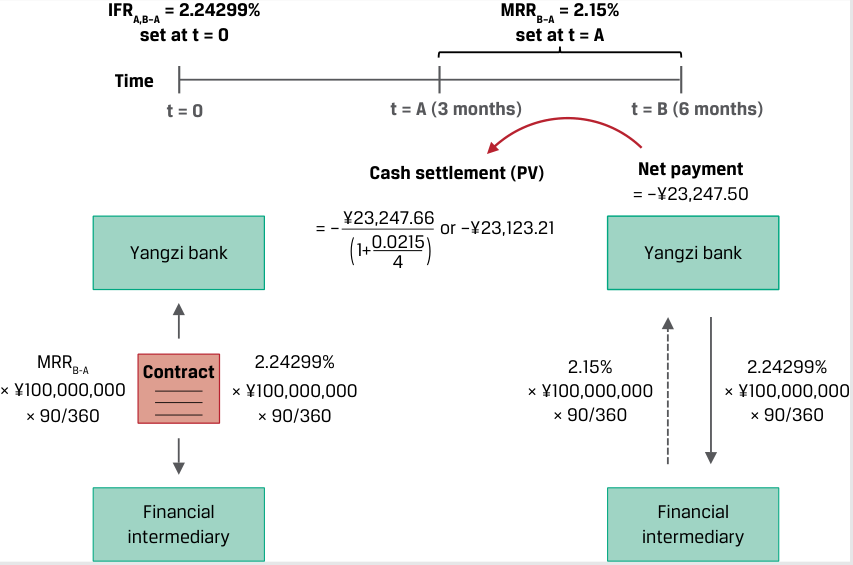
Chú thích hình ảnh: - Tại $t = 0$: Ấn định $\text{IFR}_{A,B-A} = 2.24299\%$. - Tại $t = A$ ($3\text{ tháng}$): Ấn định $\text{MRR}_{B-A} = 2.15\%$. Tất toán bằng tiền mặt theo giá trị hiện tại ($\text{PV}$): $\frac{-¥23,247.50}{1 + 0.0215/4} = -¥23,123.21$. - Tại $t = B$ ($6\text{ tháng}$): Khoản thanh toán ròng cuối kỳ tương đương $-¥23,247.50$.
In this case, since MRRB-A sets below the fixed rate, as the fixed-rate payer and floating-rate ( MRRB-A ) receiver, Yangzi Bank must make a net settlement payment to the financial intermediary. Because Yangzi Bank has used the FRA to offset or hedge an underlying liability on which it owes MRR, the net settlement payment it makes on the FRA is offset by a lower MRR payment on its liability.
Trong trường hợp này, vì $\text{MRR}_{B-A}$ được ấn định ở mức thấp hơn lãi suất cố định, nên với tư cách là bên trả lãi suất cố định và bên nhận lãi suất thả nổi ($\text{MRR}_{B-A}$), Ngân hàng Yangzi phải thực hiện một khoản thanh toán tất toán ròng cho định chế tài chính trung gian. Bởi vì Ngân hàng Yangzi đã sử dụng hợp đồng FRA để bù trừ hoặc phòng ngừa rủi ro cho một khoản nợ phải trả cơ sở mà ngân hàng phải trả lãi theo MRR, nên khoản thanh toán tất toán ròng mà ngân hàng thực hiện trên hợp đồng FRA được bù đắp bởi khoản trả lãi MRR thấp hơn trên khoản nợ phải trả của mình.
Forward rate agreements are almost exclusively used by financial intermediaries to manage rate-sensitive assets or liabilities on their balance sheets. The forward rate agreement and its single-period swap equivalent that settles at the end of an interest period form the basic building blocks for interest rate swaps, which are more frequently used by issuers and investors to manage interest rate risk.
Hợp đồng kỳ hạn lãi suất hầu như chỉ được sử dụng bởi các định chế tài chính trung gian nhằm quản lý các tài sản hoặc nợ phải trả nhạy cảm với lãi suất trên bảng cân đối kế toán của họ. Hợp đồng kỳ hạn lãi suất và công cụ tương đương của nó là hợp đồng hoán đổi đơn kỳ (single-period swap) được tất toán vào cuối kỳ tính lãi tạo thành những cấu phần nền tảng cơ bản cho các hợp đồng hoán đổi lãi suất (interest rate swaps), vốn được các tổ chức phát hành và nhà đầu tư sử dụng thường xuyên hơn để quản lý rủi ro lãi suất.
QUESTION SET
BỘ CÂU HỎI (QUESTION SET)
Interest Rate Forward Contracts
Hợp đồng Kỳ hạn Lãi suất (Interest Rate Forward Contracts)
- Determine the correct answers to complete the following sentences: The yield-to-maturity rate and the zero rate for a bond with a single cash flow at maturity in one period are ___. The price equivalent of a zero rate is the present value of a currency unit on a future date, known as a
___.
- Xác định các từ đúng để hoàn thành những câu sau đây: Lợi suất đáo hạn và lãi suất zero đối với một trái phiếu có một dòng tiền duy nhất khi đáo hạn sau một kỳ là _________. Đại lượng tương đương về mặt giá của một mức lãi suất zero là giá trị hiện tại của một đơn vị tiền tệ vào một ngày trong tương lai, được gọi là một _______________.
Solution:
Lời giải:
The yield-to-maturity rate and the zero rate for a bond with a single cash flow at maturity in one period are identical . The price equivalent of a zero rate is the present value of a currency unit on a future date, known as a discount factor .
Lợi suất đáo hạn và lãi suất zero đối với một trái phiếu có một dòng tiền duy nhất khi đáo hạn sau một kỳ là hoàn toàn giống nhau (identical). Đại lượng tương đương về mặt giá của một mức lãi suất zero là giá trị hiện tại của một đơn vị tiền tệ vào một ngày trong tương lai, được gọi là một hệ số chiết khấu (discount factor).
- An analyst observes three- and four-year government benchmark zero-coupon bonds priced at 93 and 90 per 100 face value, respectively. Calculate IFR3,1 (the implied one-year forward rate in three years’ time).
- Solution:
- Một nhà phân tích quan sát thấy các trái phiếu chính phủ chuẩn không trả lãi định kỳ kỳ hạn ba năm và bốn năm được định giá lần lượt ở mức $93$ và $90$ trên $100$ mệnh giá. Hãy tính $\text{IFR}_{3,1}$ (lãi suất kỳ hạn một năm ngầm định bắt đầu sau ba năm nữa).
- Lời giải:
First, use the three-year ( DF3 ) and four-year ( DF4 ) discount factors provided per unit of currency to derive three-year ( z 3) and four-year ( z 4) zero rates, which can be calculated as follows:
Trước tiên, sử dụng các hệ số chiết khấu kỳ hạn ba năm ($\text{DF}_3$) và bốn năm ($\text{DF}_4$) được cung cấp trên mỗi đơn vị tiền tệ để suy ra lãi suất zero kỳ hạn ba năm ($z_3$) và bốn năm ($z_4$), có thể được tính như sau:
~~~~ 1 _D Fi = (1 + zi )i Therefore:
- 0.93 = 1/(1 + z3 )3 ; z3 = 2.4485%
Do đó:
0.90 = 1/(1 + z4 )4 ; z4 = 2.6690% Solve for IFR3,1 as follows:
- $0.93 = \frac{1}{(1 + z_3)^3} \implies z_3 = 2.4485\%$
- $0.90 = \frac{1}{(1 + z_4)^4} \implies z_4 = 2.6690\%$
(1 + z3 )3 × (1 + IFR3,1 ) = (1 + z4 )4
Giải tìm $\text{IFR}_{3,1}$ như sau:
- (1.024485)3 × (1 + IFR3,1 ) = (1.02669)4 IFR3,1 = 3.3333%
- Match the following descriptions with their corresponding interest rate derivative building block.
- Hãy ghép nối các mô tả sau đây với cấu phần nền tảng công cụ phái sinh lãi suất tương ứng của chúng.
| A. Forward rate agreement | 1. The breakeven reinvestment rate linking a short-dated and long-dated zero-coupon bond |
|---|---|
| B. Implied forward rate | 2. The present value of a currency unit on a future date |
| C. Discount factor | 3. A derivative in which counterparties agree to apply a specific interest rate to a future time period |
| Cấu phần Nền tảng | Mô tả |
|---|---|
| A. Hợp đồng kỳ hạn lãi suất (Forward rate agreement) | 1. Lãi suất tái đầu tư hòa vốn liên kết một trái phiếu không trả lãi định kỳ ngắn hạn và dài hạn |
| B. Lãi suất kỳ hạn ngầm định (Implied forward rate) | 2. Giá trị hiện tại của một đơn vị tiền tệ vào một ngày trong tương lai |
| C. Hệ số chiết khấu (Discount factor) | 3. Một công cụ phái sinh trong đó các đối tác đồng ý áp dụng một mức lãi suất cụ thể cho một khoảng thời gian trong tương lai |
Solution:
Lời giải:
-
B is correct. The breakeven reinvestment rate linking a short-dated and a long-dated zero-coupon bond is the implied forward rate.
-
C is correct. The price equivalent of a zero rate is the present value of a currency unit on a future date, known as a discount factor.
-
A is correct. A forward rate agreement is a derivative in which counterparties agree to apply a specific interest rate to a future period.
-
A trader observes one-year and two-year zero-coupon bonds that yield 4% and 5%, respectively, and would like to protect herself against a rise in oneyear rates a year from now. Explain the position she should take in the FRA contract to achieve this objective and the forward interest rate she should expect on the contract.
-
B là đáp án đúng. Lãi suất tái đầu tư hòa vốn liên kết một trái phiếu không trả lãi định kỳ ngắn hạn và dài hạn chính là lãi suất kỳ hạn ngầm định (implied forward rate).
-
C là đáp án đúng. Đại lượng tương đương về mặt giá của một mức lãi suất zero là giá trị hiện tại của một đơn vị tiền tệ vào một ngày trong tương lai, được gọi là hệ số chiết khấu (discount factor).
-
A là đáp án đúng. Hợp đồng kỳ hạn lãi suất (forward rate agreement) là một công cụ phái sinh trong đó các đối tác đồng ý áp dụng một mức lãi suất cụ thể cho một giai đoạn trong tương lai.
-
Một nhà giao dịch quan sát thấy các trái phiếu không trả lãi định kỳ kỳ hạn một năm và hai năm có lợi suất lần lượt là $4\%$ và $5\%$, và muốn tự bảo vệ mình trước sự gia tăng của lãi suất kỳ hạn một năm vào thời điểm một năm sau tính từ bây giờ. Hãy giải thích vị thế mà cô ấy nên thiết lập trong hợp đồng FRA để đạt được mục tiêu này cùng với mức lãi suất kỳ hạn mà cô ấy nên kỳ vọng trên hợp đồng.
Solution:
Lời giải:
A forward rate agreement involves an underlying hypothetical future deposit at a market reference rate fixed at contract inception ( t = 0). To protect against higher rates, the trader should enter into a fixed-rate payer FRA in order to realize a gain if one-year spot rates one year from now exceed the current forward rate. A long FRA position, or fixed-rate payer, agrees to pay interest based on the fixed rate and receives interest based on a variable market reference rate determined at settlement. The FRA is priced based on the implied forward rate, or breakeven reinvestment rate between a shorter and a longer zero rate. We can solve for IFR1,1 as follows:
Một hợp đồng kỳ hạn lãi suất liên quan đến một khoản tiền gửi tương lai giả định cơ sở tại mức lãi suất tham chiếu thị trường được ấn định cố định khi khởi tạo hợp đồng ($t = 0$). Để bảo vệ trước rủi ro lãi suất tăng cao hơn, nhà giao dịch nên tham gia vào một hợp đồng FRA với tư cách là bên trả lãi suất cố định (fixed-rate payer FRA) nhằm hiện thực hóa một khoản lãi nếu lãi suất giao ngay kỳ hạn một năm vào thời điểm một năm sau tính từ bây giờ vượt quá mức lãi suất kỳ hạn hiện tại. Một vị thế mua FRA (long FRA position), hay bên trả lãi suất cố định, đồng ý trả tiền lãi dựa trên mức lãi suất cố định và nhận tiền lãi dựa trên mức lãi suất tham chiếu thị trường biến đổi được xác định khi tất toán. Hợp đồng FRA được định giá dựa trên lãi suất kỳ hạn ngầm định, hay lãi suất tái đầu tư hòa vốn giữa một mức lãi suất zero ngắn hạn hơn và dài hạn hơn. Chúng ta có thể giải tìm $\text{IFR}_{1,1}$ như sau:
(1 + z1 ) × (1 + IFR1,1 ) = (1 + z2 )2
- (1.04) × (1 + IFR1,1 ) = (1.05)2 IFR1,1 = 6.0096%
Maturities
- Một đối tác đồng ý trở thành bên nhận lãi suất cố định trong hợp đồng FRA (FRA fixed-rate receiver) đối với lãi suất MRR đồng AUD kỳ hạn một tháng bắt đầu sau ba tháng nữa dựa trên số vốn gốc danh nghĩa là $\text{AUD}150,000,000$. Nếu $\text{IFR}_{3\text{m},1\text{m}}$ khi khởi tạo hợp đồng là $0.50\%$ và lãi suất MRR đồng AUD kỳ hạn một tháng được ấn định ở mức $0.35\%$ để tất toán hợp đồng, hãy tính số tiền tất toán và diễn giải kết quả.
- A counterparty agrees to be the FRA fixed-rate receiver on a one-month AUD MRR in three months’ time based on a AUD150,000,000 notional amount. If IFR3m,1m at contract inception is 0.50% and one-month AUD MRR sets at 0.35% for settlement of the contract, calculate the settlement amount and interpret the results.
Lời giải:
Solution:
Một vị thế bán FRA (short FRA position), hay bên nhận lãi suất cố định (fixed-rate receiver), đồng ý trả tiền lãi dựa trên lãi suất tham chiếu thị trường được xác định khi tất toán và nhận tiền lãi dựa trên mức lãi suất cố định đã thỏa thuận trước, chính là lãi suất kỳ hạn ngầm định ($\text{IFR}_{3\text{m},1\text{m}}$). Vì lãi suất $\text{MRR}_{B-A}$ của đồng AUD khi tất toán thấp hơn mức lãi suất cố định đã thỏa thuận trước, nên bên nhận lãi suất cố định FRA hiện thực hóa một khoản lãi và nhận được khoản thanh toán ròng dựa trên phép tính sau đây:
A short FRA position, or fixed-rate receiver, agrees to pay interest based on a market reference rate determined at settlement and receives interest based on a pre-agreed fixed rate, the implied forward rate ( IFR3m,1m ). Since AUD MRRB-A at settlement is below the pre-agreed fixed rate, the FRA fixed-rate receiver realizes a gain and receives a net payment based on the following calculation:
Net Payment = ( IFRA,B-A − MRRB-A ) × Notional Principal × Period = (0.50% − 0.35%) × AUD150,000,000 × (1/12) = AUD18,750 at the end of the period
Solve for the present value of settlement given the contract is settled at the beginning of the period, using MRRB-A as the discount rate:
Giải tìm giá trị hiện tại của khoản tất toán khi biết hợp đồng được tất toán vào đầu kỳ, bằng cách sử dụng $\text{MRR}_{B-A}$ làm lãi suất chiết khấu:
Cash Settlement (PV) = AUD18,750.00/(1 + 0.35%/12) = AUD18,744.53
~~PRACTICE PROBLEMS~~
BÀI TẬP THỰC HÀNH (PRACTICE PROBLEMS)
The following information relates to questions 1-6
Thông tin sau đây liên quan đến các câu hỏi từ 1 đến 6
Baywhite Financial is a broker-dealer and wealth management firm that helps its clients manage their portfolios using stand-alone derivative strategies. A new Baywhite analyst is asked to evaluate the following client situations.
Baywhite Financial là một công ty môi giới - tự doanh (broker-dealer) và quản lý gia sản chuyên giúp đỡ khách hàng quản lý danh mục đầu tư của họ bằng cách sử dụng các chiến lược công cụ phái sinh độc lập. Một nhà phân tích mới của Baywhite được yêu cầu đánh giá các tình huống khách hàng sau đây.
1. Match the following definitions with their corresponding forward pricing or valuation component.
1. Hãy ghép nối các định nghĩa sau đây với cấu phần định giá hoặc xác định giá trị kỳ hạn tương ứng của chúng.
- Equal to the difference between the A. Forward contract MTM value at inception, current spot price (adjusted by remaining V 0( T ) costs and benefits through maturity) and the present value of the forward price 2. Future value of the underlying asset B. Forward contract MTM value between spot price ( S 0) compounded at the inception and maturity, Vt ( T ) risk-free rate incorporating the present value of the costs and benefits of asset ownership 3. Under no-arbitrage conditions for a C. Forward price, F 0( T ) given underlying spot price, S0, adjusted by the costs and benefits, risk-free rate ( r ), and forward price, F 0( T ), this should be equal to zero (ignoring transaction costs).
| Định nghĩa | Cấu phần Định giá hoặc Xác định Giá trị Kỳ hạn |
|---|---|
| 1. Bằng phần chênh lệch giữa giá giao ngay hiện tại (đã được điều chỉnh theo các chi phí và lợi ích còn lại cho đến khi đáo hạn) và giá trị hiện tại của mức giá kỳ hạn | A. Giá trị MTM của hợp đồng kỳ hạn khi khởi tạo, $V_0(T)$ |
| 2. Giá trị tương lai của mức giá giao ngay của tài sản cơ sở ($S_0$) được ghép lãi theo lãi suất phi rủi ro có kết hợp giá trị hiện tại của các chi phí và lợi ích từ quyền sở hữu tài sản | B. Giá trị MTM của hợp đồng kỳ hạn giữa thời điểm khởi tạo và đáo hạn, $V_t(T)$ |
| 3. Dưới các điều kiện không có kinh doanh chênh lệch giá đối với một mức giá giao ngay của tài sản cơ sở cho trước, $S_0$, đã điều chỉnh theo các chi phí và lợi ích, lãi suất phi rủi ro ($r$), và giá kỳ hạn, $F_0(T)$, đại lượng này phải bằng không (bỏ qua chi phí giao dịch). | C. Giá kỳ hạn, $F_0(T)$ |
2. A Baywhite client currently owns 5,000 common non-dividend-paying shares of Vivivyu Inc. (VIVU), a digital media company, at a spot price of USD173 per share. The client enters into a forward commitment to sell half of its VIVU position in six months at a price of USD175.58. Which of the following market events is most likely to result in the greatest gain in the VIVU forward contract MTM value from the client’s perspective?
2. Một khách hàng của Baywhite hiện đang sở hữu $5,000$ cổ phiếu phổ thông không trả cổ tức của Vivivyu Inc. (VIVU), một công ty truyền thông kỹ thuật số, tại mức giá giao ngay là $\text{USD}173$ mỗi cổ phiếu. Khách hàng này tham gia vào một cam kết kỳ hạn để bán một nửa vị thế VIVU của mình sau sáu tháng tại mức giá $\text{USD}175.58$. Sự kiện thị trường nào sau đây có khả năng cao nhất dẫn đến khoản lãi lớn nhất trong giá trị MTM của hợp đồng kỳ hạn VIVU xét dưới góc độ của khách hàng?
-
A. An increase in the risk-free rate
-
B. An immediate decline in the VIVU spot price following contract inception
-
C. A steady rise in the spot price of VIVU stock over time
-
A. Sự gia tăng của lãi suất phi rủi ro
-
B. Sự sụt giảm tức thời của giá giao ngay cổ phiếu VIVU ngay sau khi khởi tạo hợp đồng
-
C. Sự gia tăng đều đặn của giá giao ngay cổ phiếu VIVU theo thời gian
3. A Baywhite client has entered into a long six-month MXN/USD FX forward contract—that is, an agreement to sell MXN and buy USD. The MXN/USD spot exchange rate at inception is 19.8248 (MXN19.8248 = USD1), the six-month MXN risk-free rate is 4.25%, and the six-month USD risk-free rate is 0.5%. Baywhite’s market strategist predicts that the Mexican central bank (Banco de Mexico) will surprise the market with a 50 bp short-term rate cut at its upcoming meeting. Which of the following statements best describes how the client’s existing FX forward contract will be impacted if this prediction is realized and other parameters remain unchanged?
3. Một khách hàng của Baywhite đã tham gia vào một hợp đồng mua kỳ hạn ngoại hối MXN/USD (long MXN/USD FX forward contract) kỳ hạn sáu tháng — nghĩa là một thỏa thuận bán đồng MXN và mua đồng USD. Tỷ giá hối đoái giao ngay MXN/USD khi khởi tạo là $19.8248$ ($\text{MXN}19.8248 = \text{USD}1$), lãi suất phi rủi ro sáu tháng của đồng MXN là $4.25\%$, và lãi suất phi rủi ro sáu tháng của đồng USD là $0.5\%$. Chuyên gia chiến lược thị trường của Baywhite dự đoán rằng ngân hàng trung ương Mexico (Banco de Mexico) sẽ gây bất ngờ cho thị trường bằng việc cắt giảm lãi suất ngắn hạn $50\text{ bp}$ ($0.50\%$) tại cuộc họp sắp tới. Phát biểu nào sau đây mô tả đúng nhất cách thức hợp đồng kỳ hạn ngoại hối hiện hành của khách hàng sẽ bị tác động nếu dự đoán này trở thành hiện thực và các tham số khác giữ nguyên không đổi?
- A. The lower interest rate differential between MXN and USD will cause the MXN/USD contract forward rate to be adjusted downward.
- A. Mức chênh lệch lãi suất thấp hơn giữa đồng MXN và đồng USD sẽ khiến cho tỷ giá kỳ hạn trong hợp đồng MXN/USD được điều chỉnh giảm xuống.
Pricing and Valuation of Forward Contracts and for an Underlying with Varying Maturities
-
B. Khách hàng sẽ hiện thực hóa một khoản lãi MTM trên hợp đồng kỳ hạn ngoại hối do sự sụt giảm trong mức chênh lệch lãi suất giữa MXN so với USD.
-
C. Mức chênh lệch lãi suất thấp hơn giữa đồng MXN và đồng USD sẽ khiến cho khách hàng hiện thực hóa một khoản lỗ MTM trên hợp đồng kỳ hạn MXN/USD.
-
B. The client will realize an MTM gain on the FX forward contract due to the decline in the MXN versus USD interest rate differential.
-
C. The lower interest rate differential between MXN and USD will cause the client to realize an MTM loss on the MXN/USD forward contract.
4. Một khách hàng đang tìm kiếm lời khuyên về danh mục đầu tư thu nhập cố định của mình quan sát thấy mức giá và lợi suất đáo hạn của các trái phiếu chính phủ chuẩn trả lãi hàng năm kỳ hạn một năm ($r_1$) và hai năm ($r_2$) hiện đang có sẵn trên thị trường. Phát biểu nào sau đây mô tả đúng nhất cách thức nhà phân tích có thể xác định mức lãi suất tái đầu tư hòa vốn sau thời gian một năm nữa nhằm giúp quyết định xem nên đầu tư ngay bây giờ cho kỳ hạn một năm hay hai năm?
4. A client seeking advice on her fixed-income portfolio observes the price and yield-to-maturity of one-year ( r1 ) and two-year ( r2 ) annual coupon government benchmark bonds currently available in the market. Which of the following statements best describes how the analyst can determine a breakeven reinvestment rate in one year’s time to help decide whether to invest now for one or two years?
-
A. Vì lãi suất hai năm có liên quan đến các dòng tiền trung gian, hãy lấy căn bậc hai của $(1 + r_2)$ chia cho $(1 + r_1)$ rồi trừ đi $1$ để tìm ra mức lãi suất tái đầu tư hòa vốn cho kỳ hạn một năm bắt đầu sau một năm nữa.
-
B. Vì tiền lãi của năm đầu tiên được ghép lãi trong năm thứ hai, hãy đặt $(1 + r_1)$ nhân với ($1$ cộng lãi suất tái đầu tư hòa vốn) bằng với $(1 + r_2)^2$ và giải tìm lãi suất tái đầu tư hòa vốn.
-
C. Vì việc tái đầu tư hòa vốn liên quan đến một dòng tiền không trả lãi định kỳ, trước hết hãy thế mức lãi suất một năm ($r_1$) vào phương trình giá trái phiếu hai năm để giải tìm lãi suất giao ngay hay lãi suất zero hai năm ($z_2$), sau đó đặt $(1 + r_1) \times (1 + \text{lãi suất tái đầu tư hòa vốn}) = (1 + z_2)^2$ và giải tìm lãi suất tái đầu tư hòa vốn.
-
A. As the two-year rate involves intermediate cash flows, divide the square root of (1 + r2 ) by (1 + r1 ) and subtract 1 to arrive at a breakeven reinvestment rate for one year in one year’s time.
-
B. Since the first year’s returns are compounded in the second year, set (1 + r1 ) multiplied by 1 plus the breakeven reinvestment rate equal to (1 + r2 )2 and solve for the breakeven reinvestment rate.
-
C. Since the breakeven reinvestment involves a zero-coupon cash flow, first substitute the one-year rate ( r1 ) into the two-year bond price equation to solve for the two-year spot or zero rate ( z2 ), then set (1 + r1 ) × (1 + breakeven reinvestment rate) = (1 + z2 )2 and solve for the breakeven reinvestment rate.
5. Baywhite Financial seeks to gain a competitive advantage by making margin loans at fixed rates for up to 60 days to its investor clients. Since Baywhite borrows at a variable one-month market reference rate to finance these client loans, the firm enters into one-month FRA contracts on one-month MRR to hedge the interest rate exposure of its margin loan book. Which of the following statements best describes Baywhite’s interest rate exposure and the FRA position it should take to hedge that exposure?
5. Baywhite Financial tìm cách giành lợi thế cạnh tranh bằng việc cấp các khoản cho vay ký quỹ (margin loans) với lãi suất cố định lên tới $60\text{ ngày}$ cho các khách hàng đầu tư của mình. Vì Baywhite đi vay ở mức lãi suất tham chiếu thị trường kỳ hạn một tháng biến đổi để tài trợ cho các khoản vay khách hàng này, nên công ty tham gia vào các hợp đồng FRA kỳ hạn một tháng dựa trên lãi suất MRR một tháng nhằm phòng ngừa rủi ro lãi suất cho sổ cho vay ký quỹ của mình. Phát biểu nào sau đây mô tả đúng nhất rủi ro lãi suất của Baywhite và vị thế FRA mà công ty nên thiết lập để phòng ngừa rủi ro đó?
-
A. Baywhite faces exposure to a rise in one-month MRR over the next 30 days, so it should enter into the FRA as a fixed-rate payer in order to benefit from a rise in one-month MRR above the FRA rate and offset its higher borrowing cost.
-
B. Baywhite faces exposure to a rise in one-month MRR over the next 30 days, so it should enter into the FRA as a fixed-rate receiver in order to benefit from a rise in one-month MRR above the FRA rate and offset its higher borrowing cost.
-
C. Baywhite faces exposure to a decline in one-month MRR over the next 30 days, so it should enter into the FRA as a fixed-rate receiver in order to benefit from a rise in one-month MRR above the FRA rate and offset its higher borrowing cost.
-
A. Baywhite đối mặt với rủi ro lãi suất MRR một tháng tăng lên trong vòng $30\text{ ngày}$ tới, vì vậy công ty nên tham gia vào hợp đồng FRA với tư cách là bên trả lãi suất cố định (fixed-rate payer) để hưởng lợi từ sự gia tăng của lãi suất MRR một tháng vượt lên trên lãi suất FRA và bù đắp cho chi phí đi vay cao hơn của mình.
-
B. Baywhite đối mặt với rủi ro lãi suất MRR một tháng tăng lên trong vòng $30\text{ ngày}$ tới, vì vậy công ty nên tham gia vào hợp đồng FRA với tư cách là bên nhận lãi suất cố định (fixed-rate receiver) để hưởng lợi từ sự gia tăng của lãi suất MRR một tháng vượt lên trên lãi suất FRA và bù đắp cho chi phí đi vay cao hơn của mình.
-
C. Baywhite đối mặt với rủi ro lãi suất MRR một tháng giảm xuống trong vòng $30\text{ ngày}$ tới, vì vậy công ty nên tham gia vào hợp đồng FRA với tư cách là bên nhận lãi suất cố định (fixed-rate receiver) để hưởng lợi từ sự gia tăng của lãi suất MRR một tháng vượt lên trên lãi suất FRA và bù đắp cho chi phí đi vay cao hơn của mình.
6. Baywhite observes that one-month MRR is 1.2% and two-month MRR is 1.5%. Which of the following rates is closest to the forward rate that Baywhite would expect on 1m1m forward rate agreement?
6. Baywhite quan sát thấy lãi suất MRR một tháng là $1.2\%$ và lãi suất MRR hai tháng là $1.5\%$. Mức lãi suất nào sau đây gần nhất với lãi suất kỳ hạn mà Baywhite sẽ kỳ vọng trên một hợp đồng kỳ hạn lãi suất 1m1m (1m1m forward rate agreement)?
-
A. 1.80%
-
B. 1.35%
-
A. $1.80\%$
-
B. $1.35\%$
C. 3.55%
- C. $3.55\%$
~~SOLUTIONS~~
LỜI GIẢI (SOLUTIONS)
-
- B is correct. The forward contract MTM value between inception and maturity, Vt ( T ), is equal to the difference between the current spot price (adjusted by costs and benefits through maturity) and the present value of the forward price. 2. C is correct. The forward price, F 0( T ), is the future value of the underlying asset spot price ( S 0) compounded at the risk-free rate incorporating the present value of the costs and benefits of asset ownership.
-
A is correct. Under no-arbitrage conditions for a given underlying spot price, S 0, adjusted by the costs and benefits, risk-free rate ( r ), and forward price, F 0( T ), the forward contract MTM value at inception, V 0( T ), should be equal to zero (ignoring transaction costs).
-
B is correct. The original VIVU spot price ( S 0) at t = 0 must equal the present value of the forward price discounted at the risk-free rate, so an immediate fall in the spot price to S 0- < S 0 results in an MTM gain for the forward contract seller. A is not correct, since a higher risk-free rate will reduce the contract MTM from the client’s perspective by reducing the PV of F 0( T ), while C will also reduce the forward contract MTM from the seller’s perspective.
-
C is correct. A decline in the interest rate differential between MXN and USD will cause the client to realize an MTM loss on the MXN/USD forward contract, while B states that this decline will result in an MTM gain. A is incorrect as the forward price, F 0( T ), is not adjusted during the contract life. Specifically, the original MXN/USD forward exchange rate at inception is equal to 20.20 (= 19.8248e(.0425 – 0.005) × 0.5 ). If the MXN rate were to decline by 50 bps immediately after the contract is agreed, a new MXN/USD forward contract would be at a forward exchange rate of 20.15 (= 19.8248e(.0375 – 0.005) × 0.5 ). The MXN would weaken or depreciate against the USD. Since the MXN seller has locked in a forward sale at the original 20.20 versus the new 20.15 rate, the seller’s MTM loss is equal to 0.05, or MXN50,000 per MXN1,000,000 (= 0.05 × 1,000,000) notional amount.
-
C is correct. The one-year annual rate equals the one-year zero rate, as it involves a single cash flow at maturity ( z1 = r1 ). Since the breakeven reinvestment rate involves a single cash flow at maturity, substitute the one-year rate ( r1 ) into the two-year bond price equation to solve for z2 , then set (1 + r1 ) × (1 + breakeven reinvestment rate) = (1 + z2 )2 and solve for the breakeven reinvestment rate ( IFR1,1 ).
-
A is correct. As Baywhite faces exposure to a rise in one-month MRR over the next 30 days, it should enter into the FRA as a fixed-rate payer in order to benefit from a rise in one-month MRR above the FRA rate and offset its higher borrowing cost. Both B and C are incorrect, as the fixed-rate receiver in an FRA does not benefit but rather must make a higher payment upon settlement if MRR rises.
-
A is correct. The APR of the monthly compounded two-month rate is 1.499%. Dividing (1.01499/12)2 by (1.012/12) equals 1.001499. Subtracting 1 and then multiplying by 12 gives 1.7982%. Thus, the approximate forward rate is 1.80%. B is incorrect because this is a simple average of the two spot rates. C is incorrect because this result is derived from simply dividing (1.01499/12) by (1.012/12), then subtracting 1, and then multiplying by 12.
-
1. B là đáp án đúng. Giá trị MTM của hợp đồng kỳ hạn giữa thời điểm khởi tạo và đáo hạn, $V_t(T)$, bằng phần chênh lệch giữa giá giao ngay hiện tại (đã được điều chỉnh theo các chi phí và lợi ích cho đến khi đáo hạn) và giá trị hiện tại của mức giá kỳ hạn. 2. C là đáp án đúng. Giá kỳ hạn, $F_0(T)$, là giá trị tương lai của mức giá giao ngay của tài sản cơ sở ($S_0$) được ghép lãi theo lãi suất phi rủi ro có kết hợp giá trị hiện tại của các chi phí và lợi ích từ quyền sở hữu tài sản. 3. A là đáp án đúng. Dưới các điều kiện không có kinh doanh chênh lệch giá đối với một mức giá giao ngay của tài sản cơ sở cho trước, $S_0$, đã điều chỉnh theo các chi phí và lợi ích, lãi suất phi rủi ro ($r$), và giá kỳ hạn, $F_0(T)$, giá trị MTM của hợp đồng kỳ hạn khi khởi tạo, $V_0(T)$, phải bằng không (bỏ qua chi phí giao dịch).
-
B là đáp án đúng. Mức giá giao ngay ban đầu của VIVU ($S_0$) tại thời điểm $t = 0$ phải bằng giá trị hiện tại của mức giá kỳ hạn được chiết khấu theo lãi suất phi rủi ro, vì vậy sự sụt giảm tức thời của giá giao ngay xuống mức $S_0^- < S_0$ dẫn đến một khoản lãi MTM cho bên bán hợp đồng kỳ hạn. A không đúng, vì lãi suất phi rủi ro cao hơn sẽ làm giảm giá trị MTM của hợp đồng xét dưới góc độ của khách hàng bằng cách làm giảm $\text{PV}$ của $F_0(T)$, trong khi C cũng sẽ làm giảm giá trị MTM của hợp đồng kỳ hạn xét dưới góc độ của bên bán.
-
C là đáp án đúng. Sự sụt giảm trong mức chênh lệch lãi suất giữa đồng MXN và đồng USD sẽ khiến cho khách hàng hiện thực hóa một khoản lỗ MTM trên hợp đồng kỳ hạn MXN/USD, trong khi B lại nêu rằng sự sụt giảm này sẽ dẫn đến một khoản lãi MTM. A không đúng vì mức giá kỳ hạn đã ký kết, $F_0(T)$, không được điều chỉnh trong suốt vòng đời của hợp đồng. Cụ thể, tỷ giá hối đoái kỳ hạn MXN/USD ban đầu khi khởi tạo bằng $20.20$ ($= 19.8248 e^{(0.0425 - 0.005) \times 0.5}$). Nếu lãi suất đồng MXN giảm đi $50\text{ bps}$ ngay sau khi hợp đồng được ký kết, một hợp đồng kỳ hạn MXN/USD mới sẽ có tỷ giá hối đoái kỳ hạn là $20.15$ ($= 19.8248 e^{(0.0375 - 0.005) \times 0.5}$). (Xét theo lời giải gốc: vì người bán MXN / mua USD đã khóa tỷ giá mua USD ở mức $20.20\text{ MXN/USD}$ cao hơn so với mức tỷ giá kỳ hạn mới trên thị trường là $20.15\text{ MXN/USD}$, nên khoản lỗ MTM của khách hàng bằng $0.05\text{ MXN}$ trên mỗi USD, hay $\text{MXN}50,000$ trên mỗi $1,000,000$ đơn vị danh nghĩa ($= 0.05 \times 1,000,000$)).
-
C là đáp án đúng. Mức lãi suất hàng năm kỳ hạn một năm bằng với lãi suất zero một năm, vì nó chỉ liên quan đến một dòng tiền duy nhất khi đáo hạn ($z_1 = r_1$). Vì lãi suất tái đầu tư hòa vốn liên quan đến một dòng tiền duy nhất khi đáo hạn, trước hết hãy thế mức lãi suất một năm ($r_1$) vào phương trình giá trái phiếu hai năm để giải tìm $z_2$, sau đó đặt $(1 + r_1) \times (1 + \text{lãi suất tái đầu tư hòa vốn}) = (1 + z_2)^2$ và giải tìm lãi suất tái đầu tư hòa vốn ($\text{IFR}_{1,1}$).
-
A là đáp án đúng. Vì Baywhite đối mặt với rủi ro lãi suất MRR một tháng tăng lên trong vòng $30\text{ ngày}$ tới, công ty nên tham gia vào hợp đồng FRA với tư cách là bên trả lãi suất cố định (fixed-rate payer) để hưởng lợi từ sự gia tăng của lãi suất MRR một tháng vượt lên trên lãi suất FRA và bù đắp cho chi phí đi vay cao hơn của mình. Cả B và C đều không đúng, vì bên nhận lãi suất cố định (fixed-rate receiver) trong một hợp đồng FRA không được hưởng lợi mà trái lại sẽ phải thực hiện khoản thanh toán cao hơn khi tất toán nếu lãi suất MRR tăng lên.
-
A là đáp án đúng. Lãi suất $\text{APR}$ của mức lãi suất hai tháng được quy đổi sang ghép lãi hàng tháng là $1.499\%$. Lấy $(1 + 0.01499/12)^2$ chia cho $(1 + 0.012/12)$ được $1.001499$. Trừ đi $1$ rồi nhân với $12$ cho ra kết quả $1.7982\%$. Do đó, mức lãi suất kỳ hạn xấp xỉ là $1.80\%$. B không đúng vì đây là trung bình cộng giản đơn của hai mức lãi suất giao ngay. C không đúng vì kết quả này được suy ra từ việc chỉ đơn giản lấy $(1.01499/12)$ chia cho $(1.012/12)$, sau đó trừ đi $1$ rồi nhân với $12$.